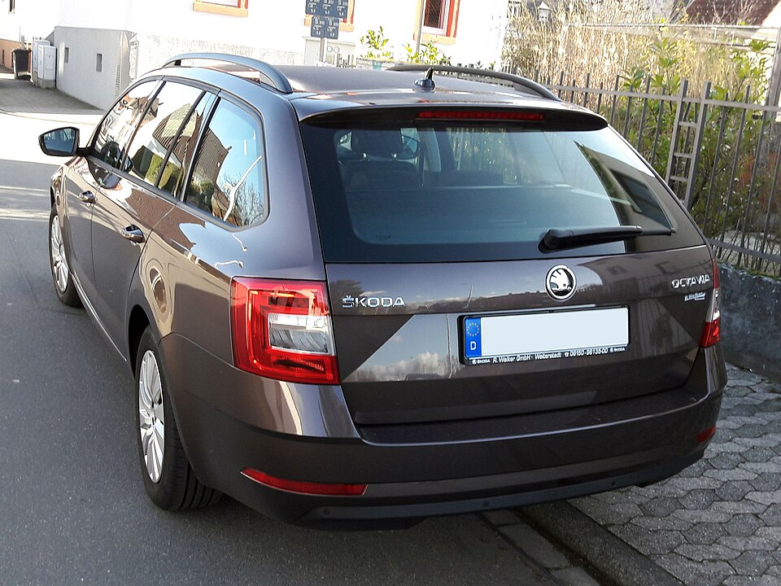
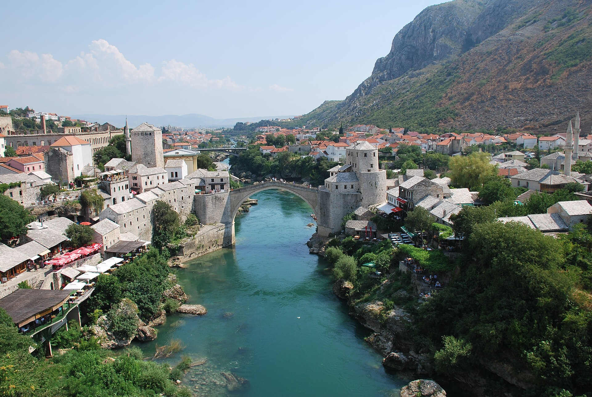

UZUN YOLLAR İÇİNŠkoda Octavia Combi
2019Geniş bagaj, keşfedilecek yeni yollar.
Station wagonGeniş bagaj alanı
Fiyat sor 
Saraybosna sokaklarından Mostar’ın eşsiz manzarasına.
Size uygun aracı seçin, Bosna’yı kendi ritminizde yaşayın.
Şehir keşfi, aile tatili ya da uzun bir rota.
Yolculuğunuza uygun aracı birlikte bulalım.

UZUN YOLLAR İÇİNGeniş bagaj, keşfedilecek yeni yollar.
 AİLE YOLCULUKLARI
AİLE YOLCULUKLARI FERAH BİR YOLCULUK
FERAH BİR YOLCULUKFotoğraflar temsili olup renk ve donanım farklılık gösterebilir. Araç özellikleri ve müsaitlik için bizimle iletişime geçin.
Planınıza ve yol arkadaşlarınıza uygun aracı belirleyin.
Tarihlerinizi WhatsApp veya e-posta ile paylaşın; fiyat ve müsaitliği öğrenin.
Teslim alma detaylarını birlikte netleştirelim. Size Bosna’nın keyfini çıkarmak kalsın.
Aracınızı seçerken veya rotanızı planlarken bize ulaşın. Yolculuğunuzun detaylarını birlikte konuşalım.
WhatsApp’tan yazınAracınızı ve tarihlerinizi seçerek WhatsApp ya da e-posta üzerinden fiyat isteyebilirsiniz. Fiyat ve müsaitlik bilgisi talebinize göre paylaşılır.
Saraybosna ofisimiz Josipa Stadlera 6, Stari Grad adresindedir. Teslim alma ve iade yeri ile saatini rezervasyon sırasında birlikte netleştiriyoruz.
Form bir fiyat ve müsaitlik talebi oluşturur. Rezervasyon, ekibimizle kiralama koşullarını ve teslim detaylarını karşılıklı teyit ettiğinizde kesinleşir. Gerekli belgeler, sigorta ve depozito koşullarını da bu aşamada sorabilirsiniz.